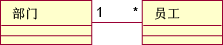

| 概念：测试构想列表 |
 |
|
简介用于设计测试的信息是从许多地方收集的：设计模型、分类器界面、状态表图和代码本身。在某个时刻，必须将此源文档信息转换为可执行的测试：
直接从源文档信息转入可执行测试是可能的，但添加一个中间步骤通常是有用的。在此步骤中，测试构想被写入测试构想列表，该列表用于创建可执行测试。 什么是测试构想？测试构想（有时称为测试需求）是关于可执行的测试的简短陈述。举一个简单的示例，让我们考虑一个计算平方根的函数，并提出某些测试构想：
每个意见都可以很容易地转换成具有精确的输入描述和期望结果的可执行测试。 这种不甚具体的中间形式有两个好处：
平方根示例都描述输入，但测试构想可以描述可执行测试的任何元素。 例如，“打印到 LaserJet IIIp”描述了要用于测试的测试环境的一个方面，“使用完整数据库测试”也是如此，但是，这些后面的测试构想本身是非常不完整的：打印机将打印什么呢？要使用此完整的数据库做什么呢？不过，它们可确保重要的意见不被遗忘；在后面的测试设计中将更详细地描述这些意见。 测试构想通常是基于错误模型的；它们是对软件中哪些错误是似是而非的和如何最佳地揭示出那些错误的看法。例如，请考虑边界值。可以安全地假设平方根函数可以如下实施：
当 < 被错误地输入成 <= 时，它也似乎是正确的。人们经常犯该类型的错误，因此该错误是值得检查的。此错误不能用具有值 2 的 X 检测到，因为错误表达式（x<=0）和正确表达式（x<0）将进入 if 语句的同一个分支。类似地，给定 X 的值为 -5，则找不出此错误。找出它的唯一方法是给定 X 的值为 0，它会证明第二个测试构想。 在本例中，错误模型是显式的。在其他案例中，它是隐式的。例如，只要程序操纵链接结构，就最好测试它是否为循环结构。多个错误导致错误地处理循环结构是有可能的。针对测试目的，不必枚举出这些错误 － 了解某个值得运行测试的足够可能发生的错误就足够了。 以下链接提供了关于从不同类型的错误模型中获取测试构想的信息。前两个是显式错误模型；最后一个使用隐式错误模型。 这些错误模型可以应用于多个不同工作产品。例如，第一个模型描述可利用布尔表达式做什么。可在代码、警戒条件、状态表图、时序图和方法行为的自然语言描述（如在已发布的 API 中）中找到这样的表达式。 有时候，用于特定工作产品的指南也是有用的。请参阅指南：关于状态表图和流程图的测试构想。 特定的测试构想列表可能包含来自多个错误模型的测试构想，并且那些错误模型可从多个工作产品中派生。 使用列表的测试设计让我们假定您正在为搜索有序集合中的字符串的方法设计测试。在搜索中可以遵循或忽略大小写，并且返回找到的第一个匹配的索引或者 -1（如果未找到匹配）。
这里是针对此方法的某些测试构想：
实施这七个测试将是很简单的，每个测试针对一个测试构想。但是，不同的测试构想可合并到一个测试。例如，以下测试符合测试构想 2、6 和 7：
提出非特定的测试构想会更容易进行合并。 在三个测试中满足所有测试构想是可能的。为什么满足七个测试构想的三个测试比七个单独的测试要好呢？
但是，出于一些原因，不创建复杂测试。
在实践中，必须在复杂和简单之间找到一个合理的平衡点。例如，施加于软件的最初的测试（通常称为冒烟测试）应是简单、易于理解和维护的，并且旨在捕获最明显的问题。后来的测试应更加复杂，但也不能复杂到无法维护。 在完成一组测试之后，最好针对概念：开发人员测试中讨论的特征测试设计错误进行检查。 在测试之前使用测试构想测试构想列表有助于复审和检查设计工作产品。例如，考虑显示部门和员工类之间的关联的这部分设计模型。  图 1：部门和员工类之间的关联 从这样一个模型中创建测试构想的规则将让您考虑部门中有多个员工的情况。通过浏览整个设计并询问“如果此刻该部门有多个员工，会怎么样呢？”，您可能会发现设计或分析错误。例如，您可能会意识到在部门之间每次只能调动一个员工。如果企业倾向于彻底重组，需要调动许多员工，那么这可能是一个问题。 忽略了可能性的此类错误、案例被称为忽略的错误。正像错误本身一样，您也许会在测试工作中忽略检测这些错误的测试。例如，请参阅 [GLA81]、[OST84]、[BAS87]和[MAR00]，以及显示部署中错误忽略频率的其他研究。 测试在设计活动中的角色在概念：测试优先设计中进一步讨论。 测试构想和可跟踪性
可跟踪性是权衡的问题。它的价值值得为维护它而花费成本吗？在 当可跟踪性是值得的时，按照惯例将跟踪测试直至回到激发它们的工作产品。例如，您可以在 API 和它的测试之间保持可跟踪性。如果 API 发生变更，您就会知道要变更哪些测试。 如果代码（用于实施 API）发生变更，您也会知道要运行哪些测试。如果测试令您迷惑不解，可以查找它希望测试的 API。 测试构想列表增加了另一个可跟踪性级别。可以从测试跟踪到其满足的测试构想，然后从测试构想跟踪到初始工作产品。 |

© Copyright IBM Corp. 1987, 2006. All Rights Reserved. |